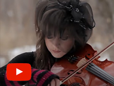
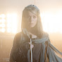
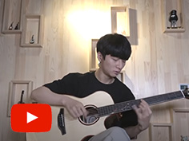
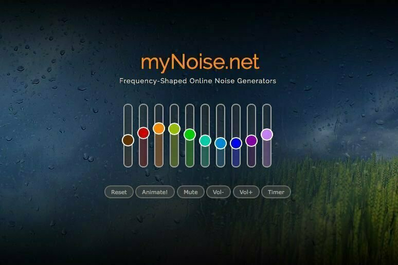

Este pequeño apartado es para incluir aquellas pequeas piezas que no se pueden
incluir en la otra tabla por su corta duración, pero que son interesantes para
conocer otros compositores o artistas que merecen la pena.
| REFERENCIAS | Tipo | Links | |
|---|---|---|---|
| Título | Video | Canal | |
| Final Fantasy X Sight of Spira |
TRACKS | Super Guitar Bros | |
| Morena | Fernanda Dias Artwork | ||
| What Child is This |  |  Lindsey Stirling | |
| Flaming |  | Sungha Jung | |
Este apartado lo he creado especialmente para referenciar una página que
frecuento mucho para encontar tracks de "Sonidos de la naturaleza"
en bucle infinito.
___________________________________Os presento:___________________________________

Esta página la tengo anclada a mi navegador desde hace tanto tiempo que
ya no recuerdo cuantos años hace que la tengo.
En ella podréis encontrar sonidos de todo tipo. Desde hoquegas, tormentas,
lluvia, sonidos tibetanos, etc.
Además cada pieza tiene varios reguladores para generar los sonidos que
escuchamos.
Espero que disfrutéis de esta obra tanto como yo.